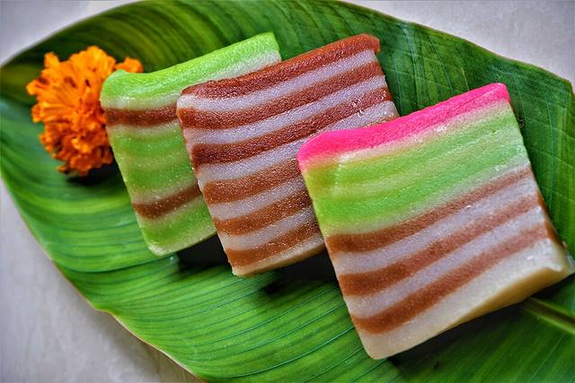
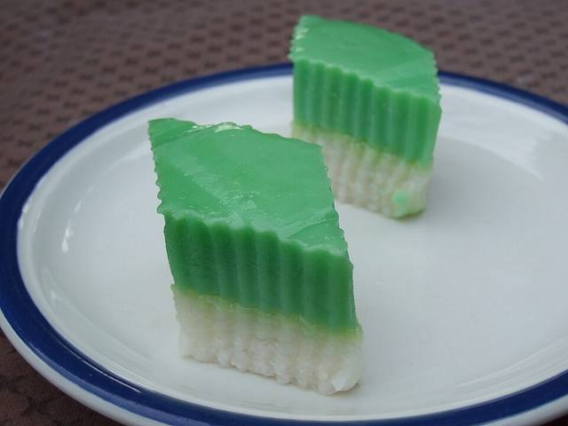
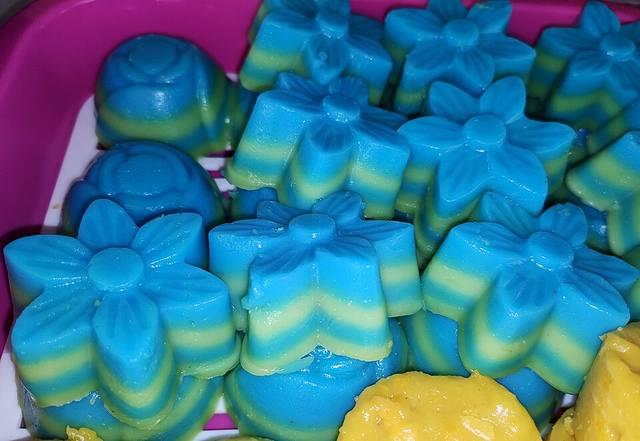
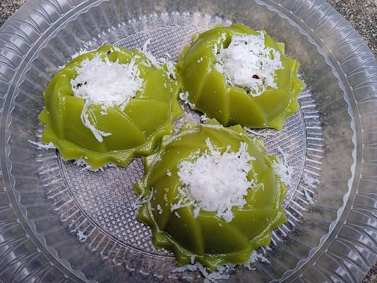
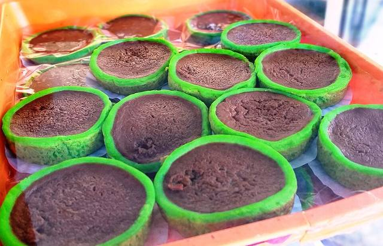
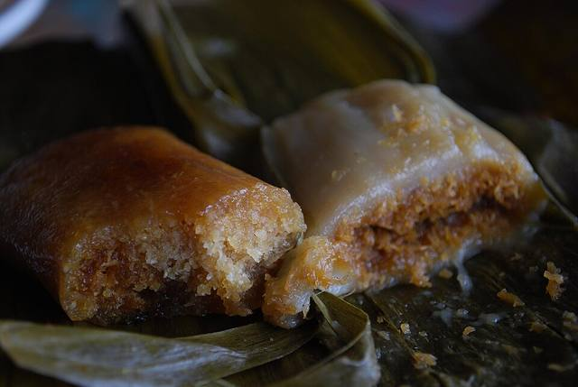
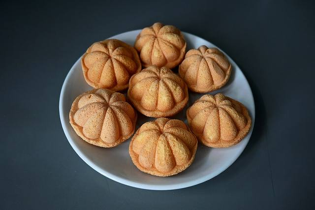
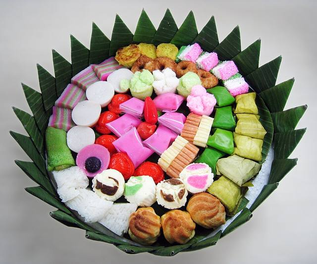

Bertih Pandan · Kuala Pilah
Kuih rumah, dikukus pagi tadi.
Dapur kecil di rumah yang membuat kuih tradisional ikut tempahan: seri muka, kuih lapis, lompang dan bahulu, untuk minum petang atau dulang majlis.
- 🌿 Tempahan awal
- Ambil sendiri
- Dulang majlis kecil

Kuih kami
Pilih ikut cara masak
Senarai berubah ikut musim dan bahan. Tekan butang untuk tapis.
Menunjukkan 6 jenis kuih

SimonLyall · domain awamSeri Muka
Pulut lemak di bawah, kastard pandan di atas.
Kukus
Fikku fiq · CC BY-SA 4.0Kuih Lapis
Dikukus selapis demi selapis, boleh dikopek satu-satu.
Kukus
Wiki Farazi · CC0Kuih Lompang
Lembut dan kenyal, ditabur kelapa parut.
Kukus
Supardisahabu · CC BY-SA 4.0Talam Gula Merah
Manis gula merah, berbalut pandan.
Kukus
avlxyz · CC BY-SA 2.0Kuih Koci
Pulut berinti kelapa manis, dibungkus daun pisang.
Kukus · Berinti
Choo Yut Shing · CC BY 2.0Bahulu
Dibakar dalam acuan, rangup di luar, gebu di dalam.
Bakar

Dulang majlis
Satu dulang, banyak warna
Campur beberapa jenis kuih dalam satu dulang untuk majlis kecil. Jenis dan jumlah dibincang semasa tempahan.
- Minum petang pejabatKuih kecil yang mudah diambil sambil berbual.
- Kenduri & doa selamatDulang disusun kemas, sedia dihidang.
- Buah tanganKotak kecil untuk dibawa berkunjung.
Cara tempah
Tiga langkah mudah
Hantar mesej
Beritahu tarikh, jenis kuih dan anggaran jumlah.
Sahkan tempahan
Kami sahkan tarikh siap dan butiran tempahan.
Ambil kuih
Ambil sendiri pada masa yang dipersetujui.
Soalan lazim
Sebelum menempah
Berapa hari awal perlu tempah?
Lebih awal lebih baik, terutama untuk dulang majlis. Pada laman sebenar, tempoh ini ditetapkan oleh pemilik.
Boleh hantar ke rumah?
Contoh ini menunjukkan ambil sendiri sahaja. Laman sebenar boleh menerangkan kawasan dan cara penghantaran pemilik.
Kuih tahan berapa lama?
Kuih kukus paling sedap dimakan pada hari yang sama. Bahulu tahan lebih lama dalam bekas kedap udara.
Bagaimana dengan status halal?
Pada laman sebenar, ruangan ini menyatakan status halal seperti yang disahkan oleh pemilik. Ini perniagaan rekaan, jadi tiada status dinyatakan.
Tempahan
Nak kuih untuk hujung minggu?
Tempah awal supaya kuih siap tepat pada masanya.